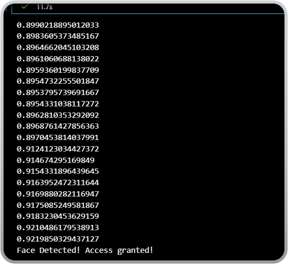

Cybersecurity • IT • Applied AI
I’m an Information Technology graduate focused on cybersecurity operations, vulnerability management, network security, and applied AI projects.
I am CompTIA Security+ certified with hands-on cybersecurity internship experience involving security event monitoring, vulnerability management, endpoint tracking, firewall policy work, and security documentation. I’m also interested in applied AI and building projects that solve real problems.

A Python-based biometric security system using PCA, Logistic Regression, and real-time webcam analysis to verify identity.
View GitHubBuilt a Windows Server 2022 Active Directory environment with users, groups, domain authentication, and Group Policy Objects.
Built a virtual SOC environment to monitor Windows endpoint logs, investigate suspicious activity, and document incident findings.
Cybersecurity Operations 80%
Vulnerability Management 80%
Firewall Administration 75%
Active Directory 75%
Python 65%
SIEM / Log Analysis 60%
SY0-701
CybersecurityProfessional Certificate
Information TechnologyCertiport
NetworkingEmail: JustinJones6711@gmail.com
GitHub: justinjones6711-ctrl
LinkedIn: Justin Jones